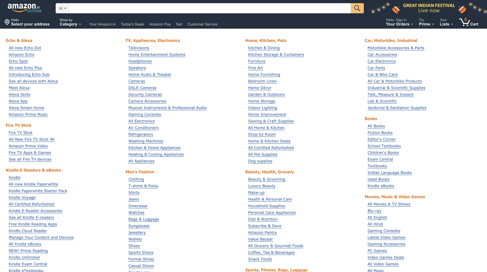
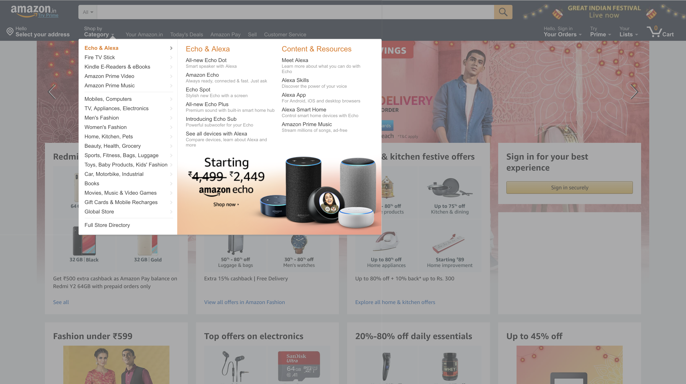

Hick's law describes the time it takes for a person to make a decision as a result of the possible choices he or she has: increasing the number of choices will increase the decision time.
Given n equally probable choices, the average reaction time T required to choose among the choices is approximately:
\(T = a + b*log_2(n+1)\)
where coefficients \(a\) and \(b\) depend on context conditions, including the way the choices are presented and the user’s degree of familiarity with the subject.
Wait, what ?
To get a better sense of how Hick's law works, let's go through a simple activity. Let's assume you are designing NASA's new spaceship and it can be any color you like. However, you can only select one color from a randomly generated set of colors that NASA gives you. In this activity we will see how the time taken to choose a color increases as we increase the pool of colors to choose from.
Let's Begin!
Step 1: Let's decide the number of colors to choose from (start at a small number like 2 colors)
Step 2: See the black boxes below? They will show the random colors and a timer will start once you hit SHOW ME COLORS.
Just click on your favorite color from the given set of random colors after hitting the button.
Step 3:
Time taken to select color:
Current average time for these number of choices is:
Step 4: Go back to Step 2 and complete the trial a few more times to get a better representation of your reaction time.
Step 5: Go back to Step 1 and change the number of color options. On the very minimum do this for a small number of choice (for example, 3 choices) and a large number of choices (say 8, choices).
Results
The scatter plot below shows your trials which each dot representing the color you selected and the time you took. The red line is generated using regression and it predicts how your time.
However, there are a few caveats..
Most probably your time went up as the number of choices increased, however, if it did not, there could be multiple reasons as to why it did not:
The distance of START button to the colors to select is variable and a major factor which can make your results look different.
Our eyes are good at spotting differences and finding patterns. This might pull your vision towards certain colors and you might not actually go through the entire list of colors, thus, it wouldn't matter how many options there were to begin with.
& How does this apply to UX?
Hick's law is sometimes cited to justify menu design decisions. For example, to find a given word (e.g. the name of a command) in a randomly ordered word list (e.g. a menu), scanning of each word in the list is required, consuming linear time, so Hick's law does not apply. However, if the list is alphabetical and the user knows the name of the command, he or she may be able to use a subdividing strategy that works in logarithmic time.
In the examples given below, the first example shows an Amazon menu with options divided into categories while the second option shows a menu without deep categorization. The time taken to find the same item would be lesser in first menu given the user is not familiar with menus, as it is organized in a hierarchy with better information scent.

The menu is divided into categories so that people can find what they are looking for quick!

The same menu when expanded is harder to browse and less user friendly
Activity 2
In activity 2, we are going see how does categorization of data affect the time taken to make a choice. In this activity let us assume that you have to pick a shade of red from the given colors:
Time taken:
Current average time for these number of choices is: